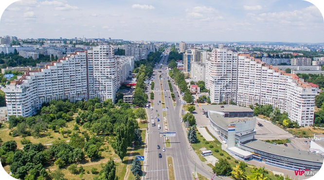
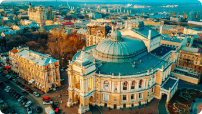
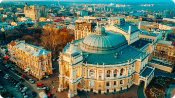

Кишинёв
Cтолица Молдовы, расположена на реке Бык. Основные достопримечательности: парк Штефана чел Маре, Триумфальная арка, Национальный музей.
Найдите популярные направления и присоединяйтесь к нам с TNDBUS. Мы
предлагаем безопасные и комфортные поездки.
 


Cтолица Молдовы, расположена на реке Бык. Основные достопримечательности: парк Штефана чел Маре, Триумфальная арка, Национальный музей.
Город в Николаевской области Украины. Основан в 1975 году, известен Южно-Украинской АЭС, расположенной рядом.
Город в Приднестровье, на берегу реки Днестр. Известен крепостью Бендерская, основанной в XVI веке.
Cело в Одесской области Украины. Основано в XVI веке казаками, известно своей историей и сельскохозяйственным производством.
Cтолица Приднестровья, расположена на реке Днестр. Основан в 1792 году, важный промышленный и культурный центр региона.
Город в Московской области России, расположенный к югу от Москвы. Известен своими промышленными предприятиями и историческими достопримечательностями.
Город в Одесской области Украины, расположенный на реке Кучурган. Известен своими археологическими находками и сельскохозяйственным производством.
Город в Одесской области Украины, расположен на берегу реки Днестр. Известен своей историей, включая Белгородскую крепость, основанную в XIII веке.